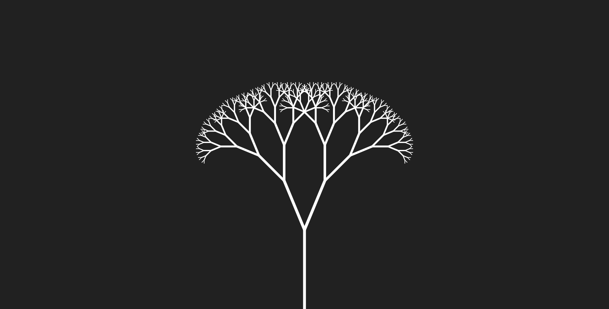
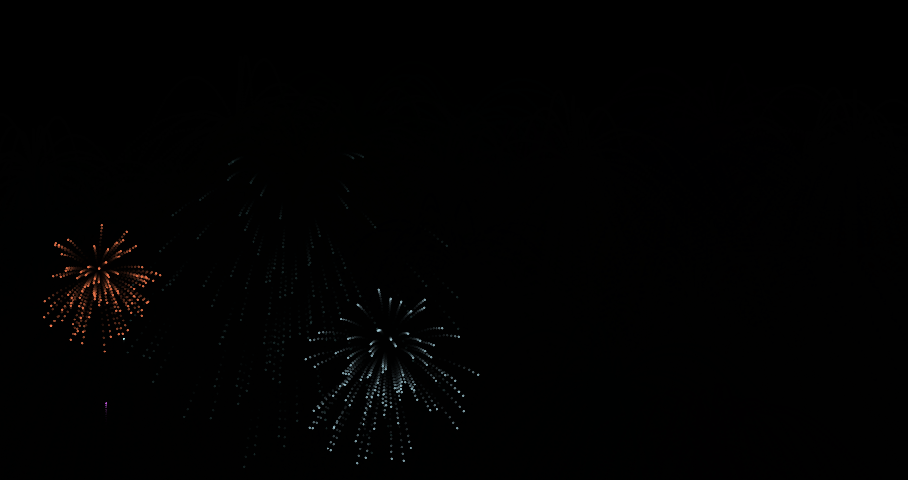
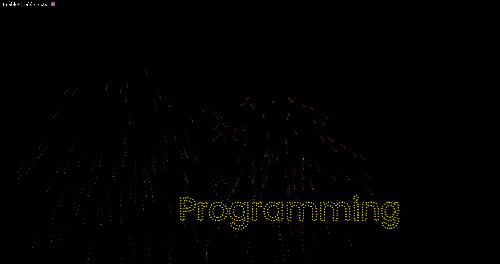
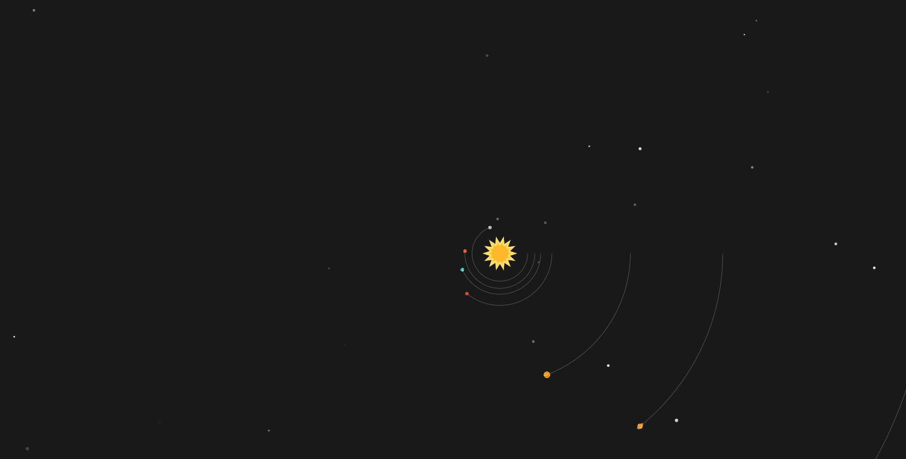

This is an interactive clock, click on the picture to see it in action!
Fractal
This is a fractal tree that grows, click on the picture to see it in action!
Fireworks
These are fireworks that shoot into the sky, click on the picture to see it in action!
Fireworks with text
These are fireworks that shoot into the sky but with text, click on the picture to see it in action!
Hilbert curve
This is a Hilbert curve, click on the picture to see it in action!
Let it snow!
For the people who like winter, here is a snow falling sketch, click on the picture to see it in action!
Maze generator
This is backtracking maze generator, click on the picture to see it in action!
Natural selection
This is a sketch that shows natural selection. Each "vehicle" has properties such as the distance it can see food and poison. The vehicle with the best properties survives the longest and can reproduce. After a while you'll see that all the vehicles are the same "species". Click on the picture to see it in action!
Random walker
This is a random walker, it's purpose is to wander the screen indefinitely, click on the picture to see it in action!
Solar system
This is a simulation of the solar system, the time is sped up, but the time travelled per distance is correct, click on the picture to see it in action!